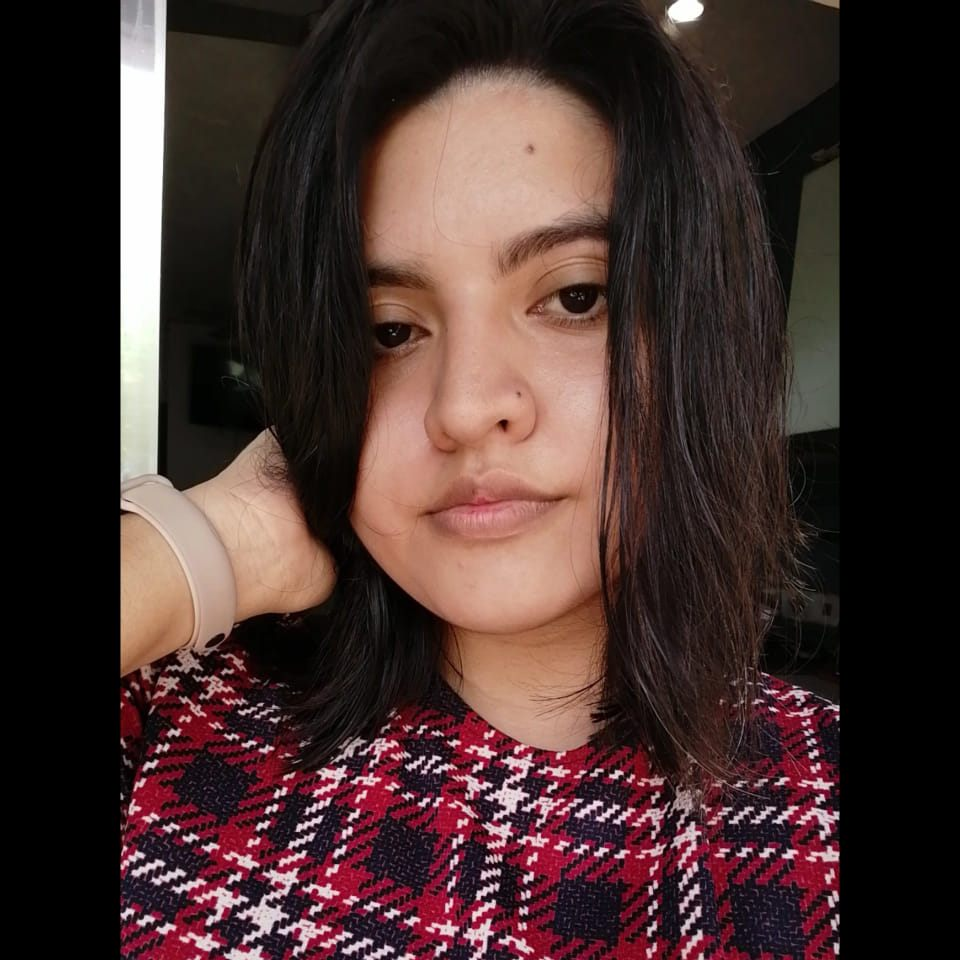

Luisa Andrea Eysele Gamboa

Biografía
Mi nombre es Luisa Andrea Eysele Gamboa, soy ingeniera física y nací en la ciudad de Mérida Yucatán el 15 de noviembre de 1997. Me gusta mucho la música, tejer, hornear, las caricaturas y la tecnología. Tengo dos hermanas y un hermano, soy la menor de 4 y tengo 4 sobrinos.
Pesa a haber estudiado una ingeniería, al estar en mi último año de carrera me empecé a interesar en las tecnologías de la información debido al lugar en el que realicé mis prácticas ya que me divertía mucho y era muy interesante aprender sobre las nuevas tendencias. También me apasiona mucho el maquillaje y algún día quisiera ser actriz de doblaje, mi personaje favorito es Perry el ornitorrinco porque me gustan mucho los personajes mudos pues el idioma no representa una barrera al momento de querer entenderlos.
Mi mayor logro
No tengo un logro en específico que considere mi "mayor logro", pero me sentí muy orgullosa cuando me pude comprar mi primer computadora con el dinero que junté en mi primer trabajo ya que me sentí independiente por primera vez.
Bebidas favoritas
- Coca-Cola
- Café simple
- Té de frutos rojos
- Jugo de naranja
- Jugo de toronja
- Agua
- Chocomilk
Canciones favoritas
- I love her - The Beatles
- Buttercup - Jack Stauber
- Mad Love - Neon Trees
- Cupid - Jack Stauber
- Yesterday - The Beatles
Términos
- Función
- Una función sirve para realizar tareas repetitivas sin la necesidad de escribir todo el algoritmo ya que al crearla simplemente se invoca y se insertan los parámetros solicitados.
- let
- Declarar una variable que puede cambiar
- const
- Declarar una variable constante.
- b
- Etiqueta para poner el texto seleccionado en negritas ej. negritas
- i
- Etiqueta para poner texto en cursiva ej. cursiva
- u
- Etiqueta para poner subrrayado en el texto ej. subrrayado.
Top 5 de artistas y mis canciones favoritas de cada uno
- The Beatles
- Let it be
- All my loving
- If I fell
- Girl
- You really got a hold on me
- Neon Trees
- 1983
- Sleeping with a friend
- Mad Love
- Everybody Talks
- Trust
- Jack Stauber
- Buttercup
- Oh Klahoma
- The ballad of Hammantha
- Cupid
- I understand
- Guns and Roses
- Sweet child O'mine
- Paradise City
- Better
- November Rain
- Don't Cry
- Daft Punk
- Digital Love
- Harder, Better, Faster, Stronger
- Instant crush